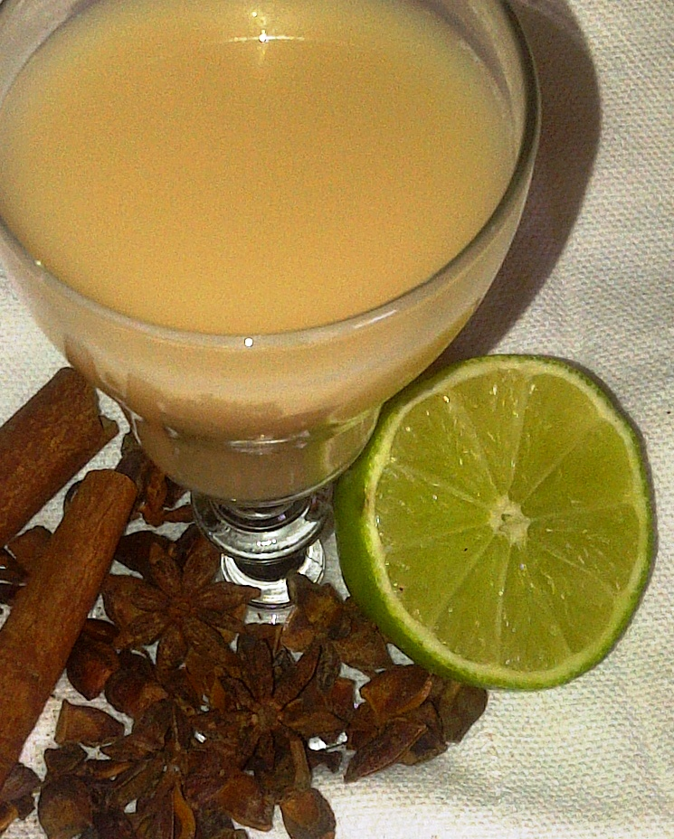

Veido kremai | Camelia - Camelia
 closeMenu
Prisijungti 0 0,00 €Prekių krepšelis
Jūsų krepšelyje nėra prekių view_headline AKCIJOS VITAMINAI IR MAISTO PAPILDAI ODOS IR PLAUKŲ KOSMETIKA DEKORATYVINĖ KOSMETIKA NERECEPTINIAI VAISTAI HIGIENOS PREKĖS MEDICINOS PREKĖS MAMAI IR VAIKUI RECEPTINIAI VAISTAI Pagrindinis chevron_right ODOS IR PLAUKŲ KOSMETIKA chevron_right KOSMETIKA chevron_right Veido kosmetika chevron_right KremaiPagrindinis
AKCIJOS VITAMINAI, MAISTO PAPILDAI Akims Atminčiai ir smegenų veiklai Energijai Imuninei sistemai Cukriniam diabetui Kaulams Kepenims Lieknėjimui Moterims Nervų sistemai Plaukams, nagams, odai Probiotikai Raumenims Sąnariams Širdžiai, kraujotakai Sportuojantiems Peršalus Vaikams Virškinimui Vitaminų kompleksai Vyrams Žuvų taukai Prietaisai Grožiui Kiti Geležies stokai Cholesterolio kontrolei Šlapimo sistemai ODOS IR PLAUKŲ KOSMETIKA KOSMETIKA Nuo aknės Kaukės Kremai Prausikliai Priešuždegiminės priemonės Šveitikliai Tonikai Kita Apsauga nuo saulės Kvepalai Moterims Vyrams Apsauga nuo vabzdžių Kūno kosmetika Aliejai Kremai Krūtinei ir dekoltė Losjonai Nuo celiulito Nuo strijų Šveitikliai Sviestas Kita Plaukams Dažytiems Jautriai galvos odai Modeliavimo priemonės Normaliems Plaukų dažai Nuo pleiskanų Nuo slinkimo Pažeistiems Riebiems Sausiems Kita Rankoms, pėdoms Dezinfektantai Kremai Muilai Nagams Pylingai Kita Gydomoji kosmetika Sausai, atopinei odai Kremai, losjonai Prausikliai Kita Veido kosmetika Akių sričiai Aliejai Kaukės Kremai Lūpoms Pieneliai Prausikliai Serumai Tonikai Valomosios priemonės Kita Eteriniai aliejai Kita DEKORATYVINĖ KOSMETIKA Akims, antakiams, blakstienoms Akims Blakstienų tušas Lūpoms Nagų lakai Nagams Pieštukai akims Veidui Skaistalai Kita VAISTAI Akims Drėkinamieji vaistai Homeopatiniai Lėtinėms akių ligoms Priešalerginiai Priešuždegiminiai Kiti Ausims Cukriniam diabetui Hormonai Moteriški hormonai Skydliaukės hormonai Vyriški hormonai Kiti Infekcinėms ligoms Antibakteriniai vaistai Antivirusiniai Nuo grybelio Nuo kirmėlių Kiti Imunitetui Kepenims ir tulžies pūslei Lytinei ir šlapimo sistemai Erekcijai Infekcinėms ligoms Kontraceptikai Nuo inkstų akmenligės Nuo šlapimo nelaikymo Nuo uždegimų Prostatai Kiti Nervų sistemai Antidepresantai Antipsichoziniai Įtampą mažinantys Migdomieji Nuo priklausomybių Priešepilepsiniai Nuo parkinsono Kiti Nuo alergijos Kvėpavimui Lašai akims Lašai į nosį Tabletės, tirpalai Tepalai ir kremai Kiti Onkologiniai Nuo peršalimo Ausims Bronchams Kombinuoti vaistai Nuo galvos skausmo Nuo gerklės skausmo Nuo karščiavimo Nuo kosulio Nuo pūslelinės Nuo slogos Kiti Nuo skausmo Dantų skausmas Galvos skausmas Menstruaciniai skausmai Uždegimai ir reumatas Kiti Odai Antibakteriniai vaistai Dermatitui, egzemai gydyti Nuo aknės Nuo alergijos Nuo randų Nuo grybelio Nuo nudegimų Nuo pragulų Nuo pūslelinės Nuo randų Nuo žvynelinės Odą minkštinantys ir saugantys Žaizdoms Kiti Raumenims, sąnariams, kaulams Kaulų ligoms Nuo nervų ir raumenų susitraukimų Nuo uždegimų ir skausmo Sąnarių ligoms Kiti Širdžiai, kraujotakai Cholesteroliui reguliuoti Geležies preparatai Kombinuoti vaistai Kraujospūdžiui reguliuoti Krūtinės anginai Lipidų kiekiui kraujyje reguliuoti Nuo širdies nepakankamumo Širdį stiprinantys Plečiantys Skystinantys kraują Šlapimą varantys Venoms Kiti Virškinimo sistemai Lėtinėms uždegiminėms žarnų ligoms Nuo disbakteriozės Nuo hemarojaus Nuo pilvo pūtimo Nuo pykinimo Nuo skrandžio rūgštingumo Nuo viduriavimo Nuo vidurių užkietėjimo Skrandžio gleivinei Spazmams šalinti Virškinimui gerinti Kiti Visi kompensuojamieji vaistai Kvėpavimo takams Kiti HIGIENOS PREKĖS Burnos higiena Antibakterinės, priešuždegiminės priemonės Dantų pasta Geliai Skalavimo skysčiai Burnos gaivikliai Dantų balinimui Dantų pasta Geliai Skalavimo skysčiai Dantų protezams Dantų šepetėliai Higieninės dantų pastos Jautriems dantims Dantų pasta Geliai Skalavimo skysčiai Kraujuojančiom dantenom Dantų pasta Geliai Skalavimo skysčiai Liežuvio valikliai Nuo akmenų susidarymo Dantų pasta Geliai Skalavimo skysčiai Nuo ėduonies Dantų pasta Geliai Skalavimo skysčiai Tarpdančiams Siūlai Tarpdančių šepetėliai Vaikams Kita Depiliacijai Juostelės Kremai Vaškas Kita Dezinfektantai Intymi higiena Įklotai, paketai Lubrikantai Prausikliai Servetėlės Tamponai Žvakutės Kita Nuo prakaito Avalynei Kūnui Kita Paklotai Išmatų nelaikymas Prausimosi priemonės Aliejai Druska Dušo želė Muilas Putos Kita Sauskelnės vaikams Skutimosi priemonės Balzamai, losjonai Peiliukai Putos, želė Kita Šlapimo nelaikymas Kelnaitės Sauskelnės suaugusiems Urologiniai Įklotai Kita Vatos gaminiai, servetėlės Kita MED.PREKĖS Adatos, švirkštai Cukriniam diabetui Diagnostika, testai Medicininė technika Elementai Inhaliatoriai Klausai Kraujospūdžio matuokliai Masažui Termometrai Žingsniamačiai Kita Svarstyklės Stimuliatoriai Oro drėkintuvai Epiliatoriai Gliukomačiai Med. prietaisai Optikos prekės Akiniai nuo saulės Akiniai skaitymui Kontaktiniai lęšiai Vienadieniai lęšiai 2 savaičių lęšiai Priežiūros priemonės Kitos Ortopedinės prekės Juostos, diržai Kojoms Nėščiosioms Nugarai Ramentai Rankoms Kitos Pirmosios pagalbos rinkiniai Eteriniai aliejai Mobilieji telefonai Pleistrai Tvarsčiai Tvarsliava Vaistinėlės Kitos Nosies higienai Peršalimui Pirštinės Akių lašai Lytinei sistemai Švirkštynės MAMAI IR VAIKUI Apsauga nuo saulės Apsauga nuo vabzdžių Čiulptukai, kramtukai Maitinančioms mamytėms Įdėklai, pieno surinkėjai Liemenėlės maitinančioms Nuo peršalimo Nuo skausmo Pientraukiai Spenelių priežiūra Vitaminai, maisto papildai Kita Maitinimui Arbata Buteliukai, indai Įdėklai, pieno surinkėjai Merliukai Žindukai Mišinukai Pientraukiai Seilinukai Kita Mažylio švarai Aliejai Ausų krapštukai Dantukams Dantų pastos Dantų šepetėliai Pirmiesiems dantukams Kremai Prausikliai Šampūnai Šukos Vandens termometrai Žirklutės Kita Nėščioms Burnos higiena Jautriems dantims Kraujuojančioms dantenoms Kita Kūno priežiūra Sausai odai Strijų profilaktika Nuo peršalimo Nuo skausmo Ortopedinės, med. prekės Švarai ir gaivai Intymiai higienai Prausimosi priemonės Veido odos priežiūra Nuo aknės Nuo pigmentacijos Sausai odai Kita Vitaminai, maisto papildai Kita Nuo mažylio negalavimų Dezinfekcinės priemonės Grybelinės infekcijos Dantukams Homeopatiniai vaistai Nuo diegliukų Nuo karščiavimo Nuo peršalimo Nuo skausmo Nuo virškinimo sutrikimų Termometrai Po gimdymo Burnos higiena Balinančios priemonės Jautriems dantims Intymiai higienai Įklotai, paketai Prausikliai Servetėlės Šlapimo nelaikymas Tamponai Tinklinės kelnaitės Kūno priežiūra Nagų stiprikliai Priemonės nuo celiulito Priemonės nuo strijų Sausai odai Vitaminai, maisto papildai Kita Vystymui Kremas nuo iššutimų Paklotai Sauskelnės Servetėlės Kita Žaislai Kita Kūdikio krepšelis VAISTAŽOLĖS, ARBATOS Cukriniam diabetui Energizuojančios Imuninei sistemai Kepenims, inkstams Kvėpavimo takams Moterims Nervų sistemai Nuo peršalimo Širdžiai, kraujotakai Šlapimo takams Tulžies pūslei Vaikams Virškinimui Vitamininės arbatos Kitos Vidurius laisvinančios Prostatai Žaizdų priežiūrai Atminčiai gerinti PROBLEMINĖS SRITYS AKIMS ALERGIJAI ATMINČIAI, SMEGENŲ VEIKLAI AUSIMS CUKRINIAM DIABETUI DANTŲ PRIEŽIŪRAI GELEŽIES STOKAI HORMONŲ PUSIAUSVYRAI IMUNITETUI INFEKCIJOMS KEPENIMS, TULŽIES PŪSLEI KRAUJOTAKAI KVĖPAVIMO TAKAMS LIEKNĖJIMUI LYTINEI, ŠLAPIMO SISTEMAI MENOPAUZEI NERECEPTINIAI VAISTAI NUO ALERGIJOS NERVŲ SISTEMAI STIPRINTI NERECEPTINIAI VAISTAI NUO HEMOROJAUS NERECEPTINIAI VAISTAI NUO PERŠALIMO NERECEPTINIAI VAISTAI NUO SKAUSMO NUO VABZDŽIŲ KREMAI, ALIEJAI, GELIAI ODAI ODOS LIGOMS ONKOLOGINIAMS SUSIRGIMAMS PAGIRIOMS PAPILDAI IR PRIEMONĖS PLAUKAMS RANKOMS, PĖDOMS RAUMENIMS RŪKANTIEMS SĄNARIAMS, KAULAMS MAISTO PAPILDAI IR PRIEMONĖS SPORTUOJANTIEMS ŠIRDŽIAI ŠVARAI IR HIGIENAI VEIDO KREMAI IR PRIEMONĖS PROBLEMINEI ODAI MAISTO PAPILDAI IR PREPARATAI VIRŠKINIMO SISTEMAI ŽAIZDOMS IR TVARSTYMUI KITA RECEPTINIAI VAISTAIKremai
Šiltuoju metų laiku pasirūpinti veido oda yra tiesiog būtina. Saulės spinduliai išsausina ir nualina viršutinį odos sluosnį, todėl pravartu jį pamaitinti aukštos kokybės drėkinamuoju kremu. Eidami į lauką pasitepkite asauginiu kremu – rezultatą pastebėsite iš karto! Nepamirškite apsaugoti ir viso savo kūno odos – drėkinkite, maitinkite ir apsaugokite ją
Show More expand_more Show Less expand_less Rikiuoti pagal: Aktualumas Aktualumas Pavadinimas, A - Z Pavadinimas, Z - A Kaina, mažiausia - didžiausia Kaina, didžiausia - mažiausiaRasta 245 prekės(-ių).
Valomasis losjonas URIAGE ROSELIANE, 250 ml
−25% 12,19 € i 16,25 € Reguliari kaina internetinėje vaistinėje 12,19 € Akcinė kaina internetinėje vaistinėje 16,25 € −25% (su PVM) Jautriai, raudonuoti linkusiai veido odai. PIRKTI Add to cart1Kremas AVENE Physiolift naktinis nuo raukšlių ,30ml
37,93 € PIRKTI Add to cart1Purškiamas terminio šaltinio vanduo VICHY EAU THERMALE , 150 ml
−25% 6,47 € i 8,63 € Reguliari kaina internetinėje vaistinėje 6,47 € Akcinė kaina internetinėje vaistinėje 8,63 € −25% (su PVM) Šaltinio vanduo, kuriame gausu mineralų ir mikroelementų. Minkština, ramina ir drėkina odą. PIRKTI Add to cart1Švelnus akių makiažo valiklis AVENE, 125 ml
−10% 14,40 € i 16,00 € Reguliari kaina internetinėje vaistinėje 14,40 € Akcinė kaina internetinėje vaistinėje 16,00 € −10% (su PVM) Emulsija-želė specialiai sukurta akių makiažui valyti. Ypač rekomenduojama nešiojantiems kontaktinius lęšius. PIRKTI Add to cart1Valomasis vanduo BIODERMA SENSIBIO H2O jautriai odai,250 ml
−25% 6,79 € i 9,05 € Reguliari kaina internetinėje vaistinėje 6,79 € Akcinė kaina internetinėje vaistinėje 9,05 € −25% (su PVM) Priemonė skirta jautriai odai. Sensibio H2O švelniai valo ir pašalina veido ir akių makiažą. PIRKTI Add to cart1Drėkinamasis kremas veidui, kūnui ir rankoms NIVEA Soft ,75ml
−30% 1,74 € i 2,48 € Reguliari kaina internetinėje vaistinėje 1,74 € Akcinė kaina internetinėje vaistinėje 2,48 € −30% (su PVM) Nivea Soft yra vertingas maitinamasis kremas kasdienei odos priežiūrai. PIRKTI Add to cart1Raminamoji, drėkinamoji kaukė AVENE, 50 ml
22,00 € Praturtinta, kreminės tekstūros kaukė užtikrina intensyvų drėkinimą ir raminimą dehidratuotai, pertemptai, išjautrintai odai. PIRKTI Add to cart1Naktinis kremas nuo raukšlių jautriai odai EUCERIN Q10 ACTIVE 50 ml
19,48 € Eucerin® Q10 Active“ naktinis kremas puikiai maitina jautrią odą, neužkemša porų. Be kvapiųjų medžiagų, alkoholio, parabenų ir dirbtinių dažiklių. PIRKTI Add to cart1Kremas veidui dieninis NIVEA Q10 PLUS nuo raukšlių (81287) 50ml
10,13 € Dienins kremas pastebimai mažina raukšles ir apsaugo nuo naujų susidarymo. PIRKTI Add to cart1Kremas veidui naktinis NIVEA Q10 PLUS nuo raukšlių (81289) 50ml
−30% 7,69 € i 10,99 € Reguliari kaina internetinėje vaistinėje 7,69 € Akcinė kaina internetinėje vaistinėje 10,99 € −30% (su PVM) Naktinis kremas pastebimai mažina raukšles ir atkuria odą naktį, kai oda geriausiai pasisavina drėgmę. PIRKTI Add to cart1Gelis - prausiklis BIODERMA ATODERM Intensive sausai odai, 200 ml
−25% 5,84 € i 7,79 € Reguliari kaina internetinėje vaistinėje 5,84 € Akcinė kaina internetinėje vaistinėje 7,79 € −25% (su PVM) Gelinis prausiklis sausai, atopiškai odai. PIRKTI Add to cart1Apsauginis kremas jautriai odai EUCERIN pH5 75 ml
9,99 € Padeda atkurti odos pH lygį ir drėkina odą iki 24 val. PIRKTI Add to cart1Drėkinamasis veido kremas SEBAMED, 50 ml
−20% 5,98 € i 7,48 € Reguliari kaina internetinėje vaistinėje 5,98 € Akcinė kaina internetinėje vaistinėje 7,48 € −20% (su PVM) Stabilizuoja natūralų odos rūgštinį sluoksnį, stiprina odos apsaugines funkcijas. PIRKTI Add to cart1Universalus odos kremas NIVEA, 30 ml
−30% 0,62 € i 0,88 € Reguliari kaina internetinėje vaistinėje 0,62 € Akcinė kaina internetinėje vaistinėje 0,88 € −30% (su PVM) Atsiprašome, prekės spalvos pasirinkti nėra galimybės. PIRKTI Add to cart1Kremas AVENE COLD, 40 ml
11,99 € Sodrus kremas, specialiai sukurtas sausos ir labai sausos jautrios odos priežiūrai. Tinka kūdikiams, vaikams ir suaugusiems. PIRKTI Add to cart1Drėkinamasis kremas sausai odai AVENE HYDRANCE RICH 40ml
20,99 € Intensyviai drėkina odą, suteikia ilgalaikį, raminantį poveikį, atstatydamas vandens rezervuarus Avene terminio šaltinio vandeniu. PIRKTI Add to cart1Dieninis kremas nuo raukšlių jautriai odai EUCERIN Q10 ACTIVE 50 ml
19,48 € Dieninis kremas nuo raukšlių jautriai odai su kofermentu Q10. PIRKTI Add to cart1Atkuriamasis veido ir kūno kremas A-DERMA DERMALIBOUR+ pažeistai odai, 50 ml
−10% 10,31 € i 11,46 € Reguliari kaina internetinėje vaistinėje 10,31 € Akcinė kaina internetinėje vaistinėje 11,46 € −10% (su PVM) PIRKTI Add to cart1Kremas sausai veido odai su 5 proc. šlapalo EUCERIN UREA 50 ml
−15% 10,60 € i 12,48 € Reguliari kaina internetinėje vaistinėje 10,60 € Akcinė kaina internetinėje vaistinėje 12,48 € −15% (su PVM) „Eucerin® Urea“ veido kremas intensyviai drėkina sausą ir labai sausą veido odą, padeda sumažinti šiurkštumą ir odos tempimo pojūtį. PIRKTI Add to cart1Vazelino tepalas, 30 g
−10% 1,97 € i 2,19 € Reguliari kaina internetinėje vaistinėje 1,97 € Akcinė kaina internetinėje vaistinėje 2,19 € −10% (su PVM) Išsausėjusiai, išdžiūvusiai, nužvarbusiai odai prižiūrėti. PIRKTI Add to cart1Veido kaukės Ellame Hydro complex,2vnt.
9,41 € Puikiai drėkina ir atgaivina veido odą, palaiko odos elastingumą, sutraukia poras. PIRKTI Add to cart1Valomasis vanduo BIODERMA SENSIBIO H2O raminantis ,jautriai odai ,100 ml
−25% 4,09 € i 5,46 € Reguliari kaina internetinėje vaistinėje 4,09 € Akcinė kaina internetinėje vaistinėje 5,46 € −25% (su PVM) Sensibio H2O yra pirmasis makiažą pašalinantis micelinis valomasis vanduo sukurtas net ir pačiai jautriausiai odai. PIRKTI Add to cart1Atkuriamasis kremas AVENE CICALFATE, 40 ml
11,99 € Atkuriamasis kremas, skirtas sudirgusiai, uždegiminei odai, taip pat esant gleivinės pažeidimams bei po dermatologinių procedūrų. PIRKTI Add to cart1Kremas VITELLA ICTAMO, 30 g
−15% 7,64 € i 8,99 € Reguliari kaina internetinėje vaistinėje 7,64 € Akcinė kaina internetinėje vaistinėje 8,99 € −15% (su PVM) Cinko oksido ir baltojo ichtiolo pasta problematiškoms ir sudirgusioms odos vietoms prižiūrėti. PIRKTI Add to cart1Drėkinamasis veido kremas sausai odai VICHY AQUALIA THERMAL RICH 50 ml
−25% 16,82 € i 22,42 € Reguliari kaina internetinėje vaistinėje 16,82 € Akcinė kaina internetinėje vaistinėje 22,42 € −25% (su PVM) Dėl drėgmės trūkumo išryškėjusios raukšlės tampa glotnesnės. Sudrėkinta, švytinti ir gaiviai graži oda. PIRKTI Add to cart1Multilipidinis tonizuojantis veido kremas PHARMACERIS A LIPO-SENSILIUM, 50 ml
−25% 7,21 € i 9,61 € Reguliari kaina internetinėje vaistinėje 7,21 € Akcinė kaina internetinėje vaistinėje 9,61 € −25% (su PVM) Pharmaceris A, jautriai ir alergiškai odai. PIRKTI Add to cart1Veido kaukė ELLAME HYDRO COMPLEX, 1 vnt.
4,71 € Kaukė yra be parabenų ir idealiai tinka visų tipų odai. PIRKTI Add to cart1Intensyvus naktinis brandžios veido ir kaklo odos kremas VICHY NEOVADIOL (721946), 50 ml
−20% 25,40 € i 31,75 € Reguliari kaina internetinėje vaistinėje 25,40 € Akcinė kaina internetinėje vaistinėje 31,75 € −20% (su PVM) Patobulinta moterų odos priežiūra menopauzės metu. PIRKTI Add to cart1Veido kaukė ELLAME ANTI AGING, 1 vnt.
5,51 € Kaukė yra be parabenų ir idealiai tinka visų tipų odai. PIRKTI Add to cart1Naktinis kremas nuo raukšlių su hialuronu EUCERIN HYALURON-FILLER 50 ml
29,87 € Naktinis kremas nuo raukšlių su hialurono rūgštimi ir dekspantenoliu visų tipų odai. PIRKTI Add to cart1Dieninis kremas nuo raukšlių sausai odai su hialuronu EUCERIN HYALURON-FILLER 50 ml
29,87 € Dieninis kremas nuo raukšlių sausai odai su hialurono rūgštimi. PIRKTI Add to cart1Valomasis veido tonikas EUCERIN DERMATOCLEAN, 200 ml
9,89 € Akimirksniu atgaivina, pašalina makiažo likučius ir nešvarumus. Tonizuoja ir leidžia odai laisvai kvėpuoti. PIRKTI Add to cart1Kasdienis raminamasis kremas jautriai, sausai ir l. sausai veido odai BIODERMA SENSIBIO RICH, 40 ml
−25% 9,51 € i 12,68 € Reguliari kaina internetinėje vaistinėje 9,51 € Akcinė kaina internetinėje vaistinėje 12,68 € −25% (su PVM) Raminamasis kremas jautriai, sausai ir labai sausai odai. PIRKTI Add to cart1Drėkinamasis kremas veidui BIODERMA SEBIUM HYDRA, 40 ml
−25% 7,67 € i 10,22 € Reguliari kaina internetinėje vaistinėje 7,67 € Akcinė kaina internetinėje vaistinėje 10,22 € −25% (su PVM) Intensyviai drėkinantis kremas, sprendžiantis pagrindines odos išsausėjimo priežastis, atsiradusias po medikamentinio gydymo ar kitų aplinkos veiksnių. PIRKTI Add to cart1Kasdienis intensyviai raminantis kremas jautriai, raustančiai odai BIODERMA SENSIBIO AR, 40 ml
−25% 9,56 € i 12,74 € Reguliari kaina internetinėje vaistinėje 9,56 € Akcinė kaina internetinėje vaistinėje 12,74 € −25% (su PVM) Efektyviai ramina, drėkina odą, sumažina raudonį ir užkerta kelią lėtinio paraudimo atsiradimui ir paūmėjimams. PIRKTI Add to cart1Maitinantis veido kremas sausai ir jautriai odai VICHY NUTRILOGIE, 50 ml
−25% 14,01 € i 18,68 € Reguliari kaina internetinėje vaistinėje 14,01 € Akcinė kaina internetinėje vaistinėje 18,68 € −25% (su PVM) Nutrilogie 1 pašalina nemalonų odos tempimo jausmą, ji tampa elastinga. PIRKTI Add to cart1Greitai raminantis kremas jautriai, sudirgusiai odai BIODERMA SENSIBIO FORTE, 40 ml
−25% 9,07 € i 12,09 € Reguliari kaina internetinėje vaistinėje 9,07 € Akcinė kaina internetinėje vaistinėje 12,09 € −25% (su PVM) Greito poveikio raminamasis kremas sudirgusiai, uždegiminei odai po procedūrų. PIRKTI Add to cart1Intensyviai drėkinantis serumas BIODERMA HYDRABIO, 40 ml
−25% 14,01 € i 18,68 € Reguliari kaina internetinėje vaistinėje 14,01 € Akcinė kaina internetinėje vaistinėje 18,68 € −25% (su PVM) Intensyviai odos drėgmę atkuriantis serumas išsausėjusiai, jautriai odai. PIRKTI Add to cart1Veido kremas su 6% pantenoliu ALTERMED PANTHENOL FORTE, 30 ml
−10% 4,76 € i 5,29 € Reguliari kaina internetinėje vaistinėje 4,76 € Akcinė kaina internetinėje vaistinėje 5,29 € −10% (su PVM) Aktyvios medžiagos saugo ląstelių membranas nuo oksidacijos ir laisvųjų radikalų daromos žalos, turi regeneruojamąjį ir apsauginį poveikį. PIRKTI Add to cart1Maitinamasis veido kremas HIMALAYA HERBALS, 50 ml
2,13 € Švelnus ir neriebus kremas kasdieniam naudojimui, kad oda taptų sveika ir elastinga. PIRKTI Add to cart1Drėkinamasis veido kremas normaliai ir mišriai odai VICHY AQUALIA THERMAL LIGHT 50 ml
−25% 14,60 € i 19,47 € Reguliari kaina internetinėje vaistinėje 14,60 € Akcinė kaina internetinėje vaistinėje 19,47 € −25% (su PVM) PIRKTI Add to cart1Kremas be konservantų ir kortikoidų LINOLA F 50 ml
−30% 7,83 € i 11,18 € Reguliari kaina internetinėje vaistinėje 7,83 € Akcinė kaina internetinėje vaistinėje 11,18 € −30% (su PVM) Simptominiam sausos, egzemos pažeistos, raustančios, niežtinčios arba išsitempusios odos gydymui. PIRKTI Add to cart1Gaivinamasis veido kremas - gelis MARGARITA su agurkais, 50 ml
−30% 1,70 € i 2,43 € Reguliari kaina internetinėje vaistinėje 1,70 € Akcinė kaina internetinėje vaistinėje 2,43 € −30% (su PVM) Lengvas gaivinamasis kremas - gelis su agurkų ekstraktu ir provitaminu B6 gaivina, švelnina ir ramina veido odą. PIRKTI Add to cart1Kasdienis raminamasis kremas jautriai, normaliai ir mišriai veido odai BIODERMA SENSIBIO LIGHT, 40ml
−25% 9,51 € i 12,68 € Reguliari kaina internetinėje vaistinėje 9,51 € Akcinė kaina internetinėje vaistinėje 12,68 € −25% (su PVM) Raminamasis kremas jautriai, normaliai ir mišriai odai. PIRKTI Add to cart1Raminamasis antibak. kremas jautriai, pleiskanojančiai, paraudusiai odai BIODERMA SENSIBIO DS+, 40ml
−25% 9,00 € i 12,00 € Reguliari kaina internetinėje vaistinėje 9,00 € Akcinė kaina internetinėje vaistinėje 12,00 € −25% (su PVM) Raminamasis antibakterinis kremas jautriai, pleiskanojančiai ir paraudusiai odai. PIRKTI Add to cart1Veido kremas su arbatmedžių aliejumi AUSTRALIAN BODYCARE 50 ml
13,93 € Kremas yra gelio pavidalo (be vandens) - odos geriau toleruojamas, lengvai absorbuojamas, užtepus šį kremą, oda neblizga. PIRKTI Add to cart1Raminamasis valomasis gelis PHARMACERIS N PURI-CAPILIUM, 190 ml
−25% 6,32 € i 8,42 € Reguliari kaina internetinėje vaistinėje 6,32 € Akcinė kaina internetinėje vaistinėje 8,42 € −25% (su PVM) Gelis skirtas kasdieniam veido odos su išsiplėtusiais kapiliarais, linkusios į paraudimus ir eritemą, valymui. PIRKTI Add to cart1Vanduo valomasis BIODERMA SENSIBIO H2O AR raustančiai odai ,250 ml
−25% 8,34 € i 11,12 € Reguliari kaina internetinėje vaistinėje 8,34 € Akcinė kaina internetinėje vaistinėje 11,12 € −25% (su PVM) Sensibio H2O AR yra pirmasis makiažą pašalinantis micelinis valomasis vanduo sukurtas jautriai, raustančiai odai. PIRKTI Add to cart1 Rodoma 1-48 iš 245 prekės(-ių) 1 2 3 … 6 Tęsti navigate_nextKategorijos
VITAMINAI, MAISTO PAPILDAI KOSMETIKA NERECEPTINIAI VAISTAI HIGIENOS PREKĖS MAMAI IR VAIKUI MED.PREKĖS VAISTAŽOLĖS, ARBATOSSvarbu žinoti
Vaistinės DUK Pirkimo taisyklės Privatumo taisyklės Apmokėjimas ir pristatymas Apie mus KontaktaiBendraukime
Klauskite vaistininko 8 700 55170Kodėl verta rinktis mus?
Patogiau - Užsakymą atlikti paprasta, greita ir saugu, o atsiimti - patogu, Pasirūpinome, kad prekių pristatymas tiesiai į pasirinktą vaistinę „camelia“ būtų nemokamas. Pigiau - Internetinėje vaistinėje „camelia“ galite prekes įsikyti pigiau, nei įprastoje vaistinėje ir pasinaudoti ypač patraukliomis išskirtinėmis akcijomis. Saugiau - Norimas prekes išsirinksite ir įsigysite visiškai konfidencialai: atsiimant užsakymą užteks tik pateikti užsakymo numerį. UAB Nemuno vaistinė
Įmonės kodas 134778482
PVM mokėtojo kodas LT347784811
Adresas: 278 filialas Pramonės pr. 6, Kaunas
Telefonas: 8 700 55170
El. paštas: evaistine@camelia.lt
Jei vaistinės siūlomi sprendimai jūsų netenkina, prašome kreiptis į Valstybinę vaistų kontrolės tarnybą prie Lietuvos Respublikos sveikatos apsaugos ministerijos
close × error_outline ×